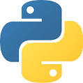
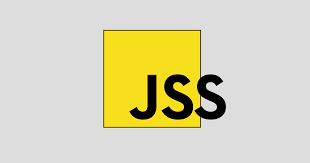
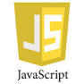
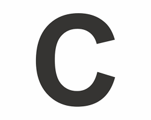

| PROGRAMING LANGUAGE | |||||
|---|---|---|---|---|---|
| WEB DEVELOP | PHP | ASP.NET |  PYTHON |  JAVA SCRIPT> | |
| WEB DESIGN | HTML |  CSS CSS |
 JAVA SCRIPT | JAVA QUERY | |
| DESKTOP | C++ |  JAVA SE JAVA SE |
PYTHON | DELPHI | VISUAL BASIC:NET |
| SMART PHONE | IPHONE | ANDROID | WINDOWS | ||
| EMBEDDED SYSTEMS |  C | C++ | ASSEMBLY | ARTIFICIAL INTELLIGENT | |
Python
1991'den beri Python programlama dili sadece gereksiz programlar için tamamlayıcı
bir dil olarak değerlendiriliyordu. Hatta “Automate the Boring Stuff”
(Türkçe'ye "Sıkıcı Şeyleri Otomatikleştiren" olarak çevirebileceğimiz popüler bir kitap)
adında bir kitap dahi yayınlanmıştır.
Bununla birlikte son birkaç yılda Python modern yazılım geliştirme, altyapı yönetimi
ve veri analizinde birinci sınıf bir programlama dili olarak ön plana çıkmıştır.
Artık hackerlar için bir arka kapı oluşturucusu değil, web uygulaması oluşturma ve sistem
yönetiminde önemli rol alma, veri analizleri ve makine öğreniminde parlayan
bir dil olarak ün kazanmıştır.
Java Script
In November 1996, Netscape submitted JavaScript to Ecma International, as the starting point for a standard specification that all browser vendors could conform to. This led to the official release of the first ECMAScript language specification in June 1997. The standards process continued for a few years, with the release of ECMAScript 2 in June 1998 and ECMAScript 3 in December 1999. Work on ECMAScript 4 began in 2000.[20] Meanwhile, Microsoft gained an increasingly dominant position in the browser market. By the early 2000s, Internet Explorer's market share reached 95%.[24] This meant that JScript became the de facto standard for client-side scripting on the Web.
C
AT&T Bell laboratuvarlarında, Ken Thompson ve Dennis Ritchie tarafından
UNIX İşletim Sistemi' ni geliştirebilmek amacıyla B dilinden türetilmiş
yapısal bir programlama dilidir. Geliştirilme tarihi 1972 olmasına
rağmen yayılıp yaygınlaşması Brian Kernighan ve Dennis M. Ritchie
tarafından yayımlanan "C Programlama Dili" kitabından sonra hızlanmıştır.
Günümüzde neredeyse tüm işletim sistemlerinin (Microsoft Windows, GNU/Linux, *BSD, Minix)
yapımında %95' lere varan oranda kullanılmış, hâlen daha sistem, sürücü yazılımı,
işletim sistemi modülleri ve hız gereken her yerde kullanılan oldukça yaygın ve sınırları
belirsiz oldukça keskin bir dildir.[kaynak belirtilmeli]" Keskinliği, programcıya sonsuz
özgürlüğün yanında çok büyük hatalar yapabilme olanağı sağlamasıdır. Programlamanın gelişim
süreciyle beraber programlamanın karmaşıklaşması, gereksinimlerin artması ile uygulama
programlarında nesne yönelimliliğin ortaya çıkmasından sonra C programcıları büyük ölçüde
nesne yönelimliliği destekleyen C++ diline geçmişlerdir.
başa dön